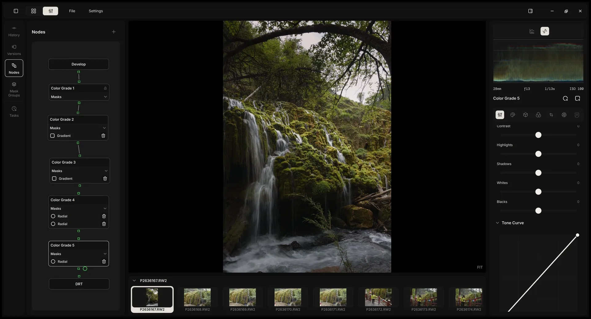
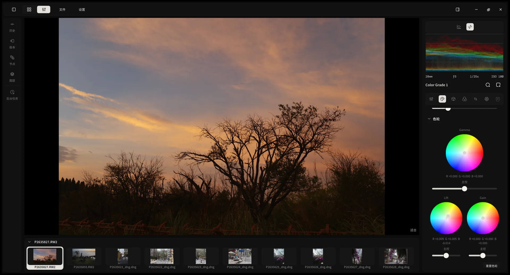
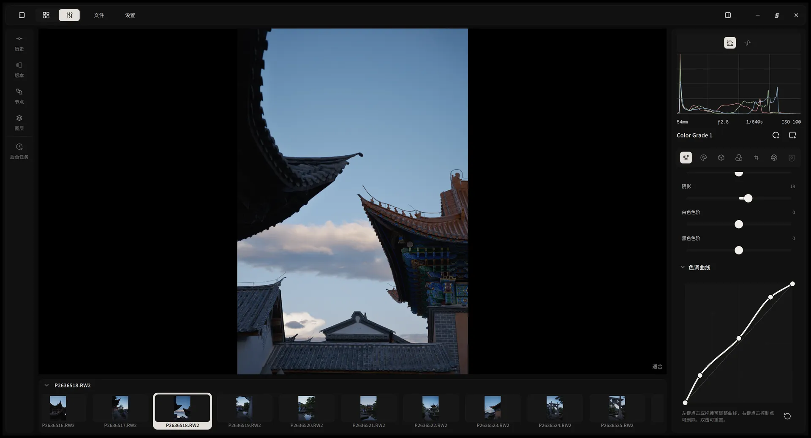
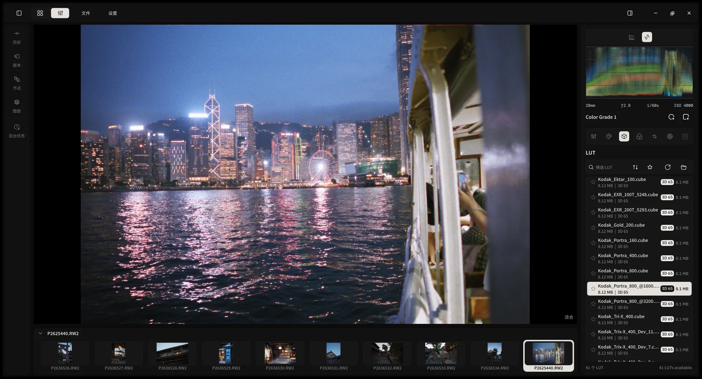
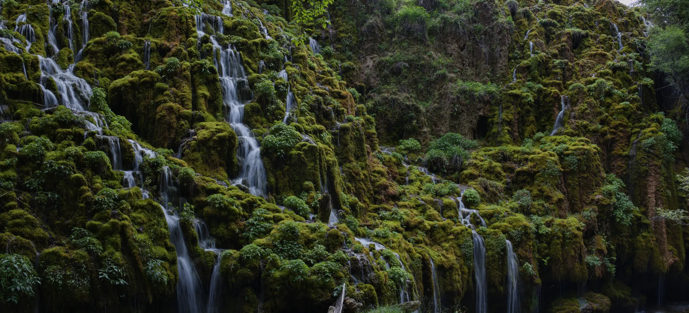
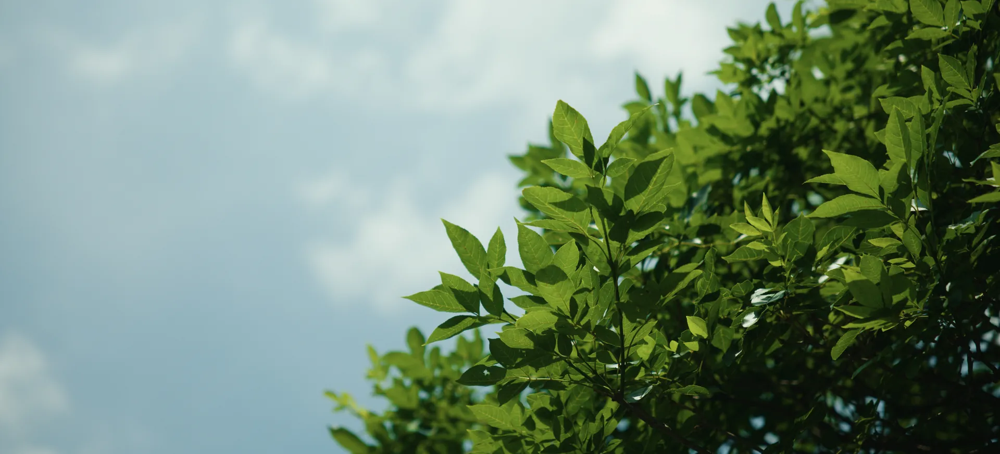

A modern darkroom for RAW photos.
Professional grading tools, a clean interface, and a GPU engine that never makes you wait. Free and open source, for Windows and Mac.
Windows 10/11 x64 · Apple Silicon Mac · Free and open source (GPL-3.0)

Tools
Every tool where you expect it.
The controls are laid out the way photographers think. No modules to assemble, no search bar to find the shadows slider.
- Exposure
- Contrast
- Highlights
- Shadows
- Whites
- Blacks
- White balance
- Tone curve
- Color wheels
- Selective color
- Local tone mapping
- Radial masks
- Linear masks
- Film stocks
- Grain
- Halation
- Lens correction
- Versions



- Color wheels
- Tone curve
- Film LUTs
Performance
Heavy edits. No waiting.
Stack grade nodes and masks, and every slider still answers in real time. Alcedo re-renders only what you changed, entirely on the GPU: CUDA, OpenCL, or Metal.
- DevelopCached
- Grade 1Reused
- Grade 2Adjusting
- Grade 3Recomputed
- DRTRecomputed
- 60fpspreview while you drag a slider
- 2000×faster search in a 20,000-photo library
- 150MBof memory while importing 20,000 photos
Library figures: developer benchmarks of 0.2.9 against 0.3.0 with 20,000 photos. Results vary with hardware.

Beautiful from the first frame.
ACES 2.0 and OpenDRT give every RAW a rich, filmic starting point instead of a flat one. Accurate color for current cameras, neural demosaicing for Fujifilm X-Trans, and 68 film stocks measured from real spectral data.
New in 0.3.0
Grade like a colorist.
Build a look from nodes, the way film colorists do. Each node carries the full toolset and its own radial and linear masks, drawn directly on the image.

Stack without limits
Add as many Color Grade nodes as the photo needs. Default layers are locked against accidents.
Masks on the canvas
Drag center, radius, and rotation; feather the inside and outside edges separately.
Undo anything
Every node and mask change is part of the history and your named versions.
Design
The interface steps back. Your photos step forward.
A calm, modern interface built natively for Windows and Mac. Library and editor share one window and one project file.


Free. Open source. Yours.
No subscription and no account. Your library lives on your computer, and every line of code is on GitHub under GPL-3.0.
Get Alcedo Studio
Free and open source, for Windows and Apple Silicon Mac.
Windows 10/11 x64 · Apple Silicon Mac · Free and open source (GPL-3.0)
Upgrading from 0.2.9? Projects created with 0.2.9 or earlier can't be opened in 0.3.0.